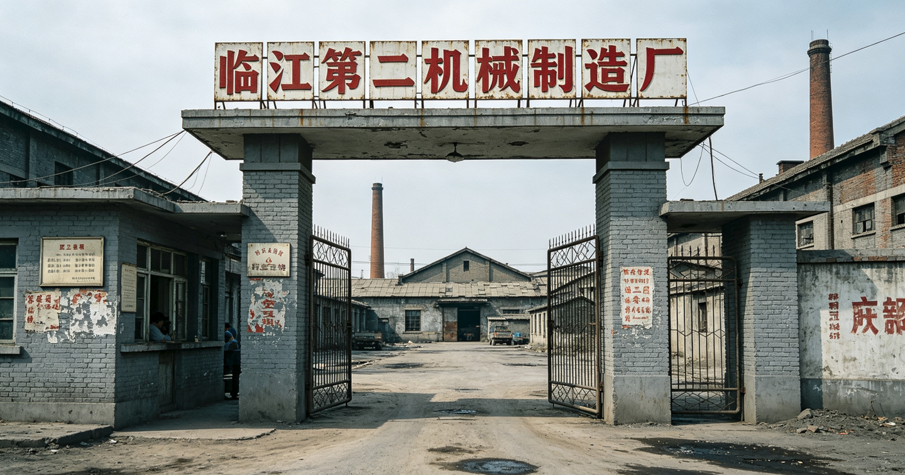
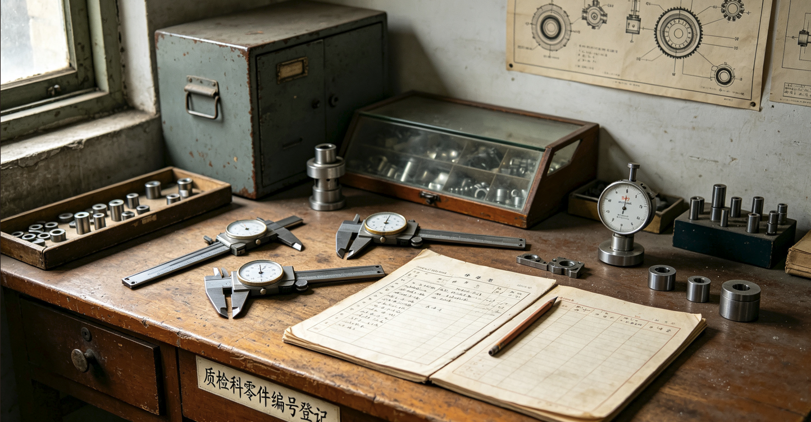
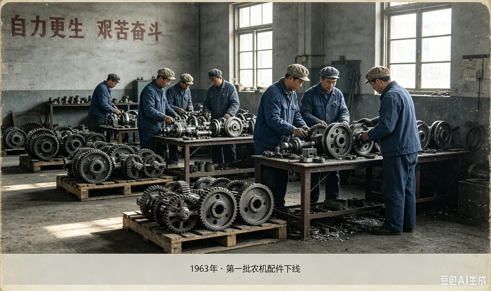
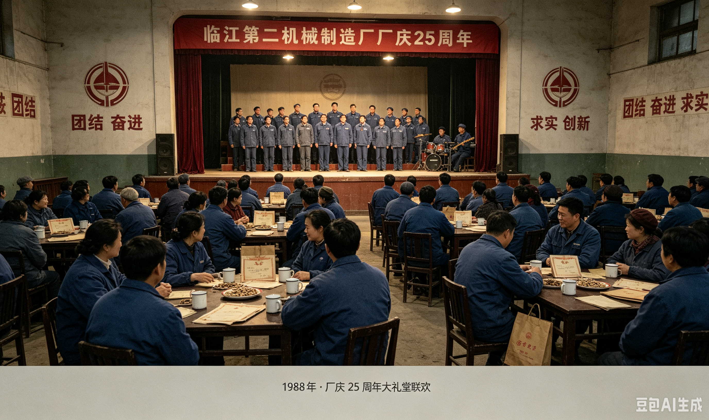
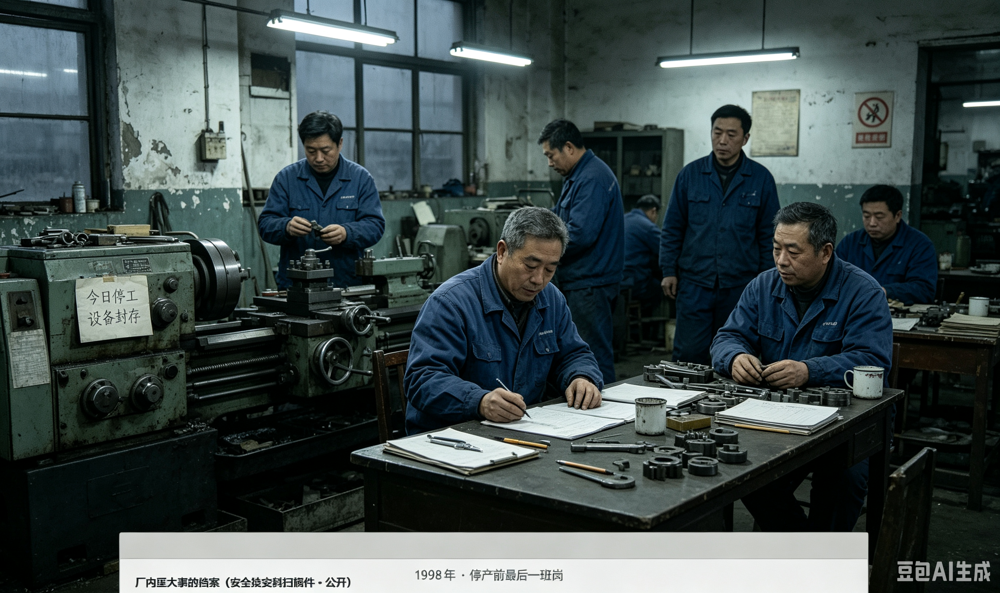

企业简介
厂区地址：临江市城北工业带，东围墙直接毗邻工人新村｜占地 11.7 万平方米｜鼎盛在册职工 2247 人
主导产品：农用机械配件、工程机械精密传动部件、矿山设备配套零部件
临江第二机械制造厂是临江市建国后重点地方国营工业项目。厂区是一套完整的"小社会"体系：除生产车间外，配套建设职工家属楼（工人新村）、职工食堂、职工医院、子弟中小学、澡堂、托儿所、大礼堂、供销合作社、篮球场。绝大多数职工家庭居住在隔壁工人新村，厂区与生活区仅一墙之隔，邻里基本都是同事，形成浓厚的熟人社会氛围。
质检科是全厂质量把关核心。1975 年起正式启用统一零件物料编号体系，每一件出厂零部件分配唯一编号，检验员手写登记编号、尺寸、检测日期并签字，建立纸质台账存档。该制度沿用至停产，很多老质检职工退休后仍保留抄写编号记笔记的习惯，周素兰即为典型代表。


八十年代中后期工厂效益达到顶峰；九十年代市场转型、设备老化、回款困难，效益逐年滑坡。1996 年开始拖欠工资，1998 年 10 月全厂停工，大批职工退休、买断工龄。原行政办公楼改建为「临江二机厂厂史馆」，2018 年启动档案数字化扫描项目，即本站点。工人新村 7 栋等家属楼完整保留至今。
手写批注（扫描件边缘）：不少老质检退休之后，习惯拿零件编号代指人、家事，不用真名，算是老工人之间心照不宣的小习惯。周素兰的私人笔记本中大量出现本厂物料编号。
组织机构沿革
生产车间
- 铸造车间 · 毛坯浇铸、金属粗加工
- 机加工一车间 · 大型工程机械部件加工
- 机加工二车间 · 精密小件加工（质检科主要对接）
- 热处理车间 · 金属淬火、回火处理
- 装配车间 · 零部件总装出厂
- 维修工段 · 厂区设备维护抢修
职能科室
- 质检科 · 质量检验、物料编号台账管理（周素兰所属）
- 技术科 · 图纸绘制、工艺改进
- 供应仓储科 · 保管全套零件编号原始台账
- 劳资人事科 · 职工入职、退休、工资档案
- 安全技安科 · 车间安全管理、工伤事故登记
- 工会 · 职工福利、困难补助
- 行政后勤科 · 食堂、澡堂、子弟学校、托儿所
厂史大事记（1962–2026）
档案来源：厂史馆馆藏文书、工会会议记录、劳资科档案。部分 1996–1998 档案纸张老化，字迹缺损。
- 1962-07建厂批复，选址城北，工人新村 1–3 栋同步动工。
- 1963-04正式投产，第一批农机配件下线。
- 1972-09子弟学校、托儿所、职工医院建成；工人新村 4–6 栋完工；大礼堂落成。
- 1975-03物料编号制度建立，格式：两位拼音大类码–三位流水序号。工人新村 7 栋竣工。
- 1978-11机加工一车间操作事故，一名工人手指伤残，记入安全技安科档案。
- 1986-03-11周素兰调入质检科，从事精密零件质检。全厂人数达峰值 2247 人。
- 1988-06厂庆 25 周年，发放纪念搪瓷杯；工人新村举办家属联欢。
- 1991-08热处理车间金属烫伤事故，一名年轻操作工重伤，即周小梅（周素兰小女儿）。工伤后离厂打零工。
- 1993-12全年产值创历史新高；分批翻新新村住宅楼楼道、供水管道。
- 1996-02订单缩减，部分车间减产；工资延期发放，部分职工待岗。
- 1997-05推行自愿买断工龄，大批中年职工离厂；部分设备封存。
- 1998-07-02周素兰正式退休。档案备注：退休时申请带走一套旧版《精密零部件编号简表》副本。同年其丈夫病逝。
- 1998-10-12全厂正式停工，启动改制；退休金延迟发放，新村内矛盾增多。
- 2001-04改制收尾，大部分厂房拆除，保留一栋办公楼改建厂史馆。
- 2005-09实体厂史馆对老职工开放，收集老物件、口述、老照片。
- 2018-11档案数字化工程启动，搭建本数字厂史馆。
- 2021–26厂史馆工作日有限开放；部分原始纸质台账存于厂史馆库房，另一部分曾在工人新村 7 栋 402（周素兰旧居）被发现。
历史影像（数字化扫描中）



档案破损标记：1997–1998 年部分仓储科物料台账原始纸质件存在页面缺失。
厂内重大事故档案（安全技安科扫描件 · 公开）
1978-09-12 · 机加工一车间 · 机械挤压工伤
一名工人操作失误致手指伤残，已按工伤办理。
1991-08-03 · 热处理车间 · 烫伤事故 · 职工周小梅
职工周小梅（临时工，1970-08-03 生），面部及四肢烫伤，1991-08-10 办理离岗——事故当日恰逢其 21 岁生日。备注：系质检科周素兰之女。事故后不再在本厂就职。
退休员工名录（节选）
账号编制规则：部门拼音首字母两位 + 出生月日四位（例：质检科、4 月 17 日生 → ZJ-0417）。完整人事档案需凭档案编号调取。
| 档案编号 | 姓名 | 岗位 | 入厂 | 退休/离岗 | 居住地址｜档案备注 |
|---|---|---|---|---|---|
| JY-0417 | 周素兰 | 质检科·精密零件质检员 | 1986-03-11 | 1998-07-02 | 工人新村7栋402；厂级先进职工；习惯手抄编号台账，退休带走一份零件目录副本。 |
| JY-0309 | 李建国 | 机加工一车间车工 | 1982-05-06 | 1998-06-10 | 工人新村5栋201；厂史馆志愿讲解员。 |
| JY-0522 | 王桂英 | 质检科辅料登记员 | 1984-11-02 | 1998-08-15 | 工人新村3栋104；负责厂史馆口述档案整理，周素兰昔日同事。 |
| JY-0281 | 张卫国 | 铸造车间操作工 | 1980-01-15 | 1997-12-30 | 已搬离临江市；买断工龄离职。 |
| LG-1143 | 周小梅 | 热处理车间临时工 | 1989-04-02 | 1991-08-10 | 工伤离岗；备注：系质检科周素兰之女。 |
| JY-0614 | 赵德山 | 机加工二车间钳工 | 1981-02-20 | 1998-09-01 | 工人新村6栋303；退休职工。 |
| JY-0156 | 刘桂芝 | 工会办事员 | 1979-06-14 | 1998-04-22 | 工人新村2栋501；负责老职工慰问登记。 |
| JY-0733 | 孙长海 | 仓储科物料管理员 | 1983-07-05 | 1998-06-27 | 工人新村4栋202；保管原版零件编号台账。 |
老职工口述档案
口述｜王桂英（JY-0522，质检科老同事，1998 退休）
"老周做质检那真是一丝不苟，卡尺、台账，一点错都不能有。厂里每一个零件编号她几乎都背得出来。退休之后还总回厂史馆翻旧台账本子。我们那时候开玩笑，说她拿厂里编号记家里的私事，本子上写一堆编号，我们都看不懂写的啥。她家的事，外人也不好多问，只知道小女儿早年出过事，她难过很久。"
口述｜李建国（机加工车间老工人）
"二机厂那时候，厂子就是半个家。工人新村楼上楼下全是同事，谁家出事整个小区都知道。但是很多家务事，大家嘴上不说，心里都清楚。老周家小梅当年在车间出了事，那天还是她生日，老周在车间门口哭得站不住。后来小梅就离厂了，再也没回来。"
口述｜孙长海（原仓储科管理员）
"那套零件编号规则 1975 年启用，大类是零件拼音首字母，后面三位流水号。很多老质检拿这个记东西，图个保密，家里人看不懂本子写什么。周素兰那本子，我见过，上面圈了好几个号，问她她也不说。"
零件编号目录
《临江二机厂 精密零部件编号简表（质检科 1995 副本）》。本扫描件为周素兰退休带走副本的数字化件；原件纸质本发现于工人新村 7 栋 402 旧居，页面可见铅笔手写批注。
| 零件编号 | 零件名称 | 大类 | 零件用途 |
|---|---|---|---|
| JG-001 | 机钩连接件 | JG | 工程机械挂钩配件 |
| JG-012 | 紧固卡扣 | JG | 设备装配卡扣 |
| JG-027 | 机座固定垫圈 | JG | 机加工底座垫片 |
| QM-008 | 曲面密封膜片 | QM | 精密设备密封件 |
| QM-014 | 曲面耐磨垫片 | QM | 耐磨缓冲垫片 |
| QM-022 | 曲面压环 | QM | 密封组件压件 |
| YL-003 | 压力连杆 | YL | 传动压力部件 |
| YL-021 | 压力弹簧座 | YL | 弹簧固定基座 |
| YL-036 | 压力调节销 | YL | 压力组件调节零件 |
| H-007 | 合金衬套 | H | 设备转轴衬套 |
| H-011 | 合金密封环 | H | 高温密封环 |
| H-019 | 合金垫圈 | H | 耐高温垫片 |
| ZM-005 | 轴面磨片 | ZM | 轴体耐磨耗材 |
| ZM-017 | 轴套垫圈 | ZM | 传动轴垫圈 |
| ZM-024 | 轴端锁紧片 | ZM | 传动轴锁紧配件 |
| CL-004 | 传动连杆 | CL | 传动机构零件 |
| CL-016 | 传动卡簧 | CL | 传动组件限位件 |
| FS-002 | 防尘密封片 | FS | 设备防尘组件 |
档案缺失提示：1995–1998 完整物料流水纸质台账原件，一部分存厂史馆库房，另一部分在工人新村 7 栋 402 周素兰家中被发现。
系统公告
【公告】数字档案室管理后台试运行中，如有问题请联系信息科（分机 803）。测试账号 test，初始密码 lj2j2026，正式上线前请删除本行。
🔓 个人数字档案室 · 周素兰（ZJ-0417）
👤 个人档案
- 姓名：周素兰 账号：ZJ-0417
- 出生日期：1948-04-17
- 部门 / 岗位：质检科 · 精密零件质检员
- 在职时间：1986-03-11 至 1998-07-02
- 居住地址：工人新村 7 栋 402
- 紧急联系人：周卫国（长子）
- 本人最后登录：2026-02-16 08:12
🏭 工作记录
- 1986 调入质检科，负责零件核验、编号台账登记。
- 1996 获市级"质量标兵"个人。
- 1998 退休，带走《编号简表》副本；同年丈夫病逝。
- 2005 厂史馆志愿整理员。
- 2018 受聘档案数字化志愿者，开通本档案室。